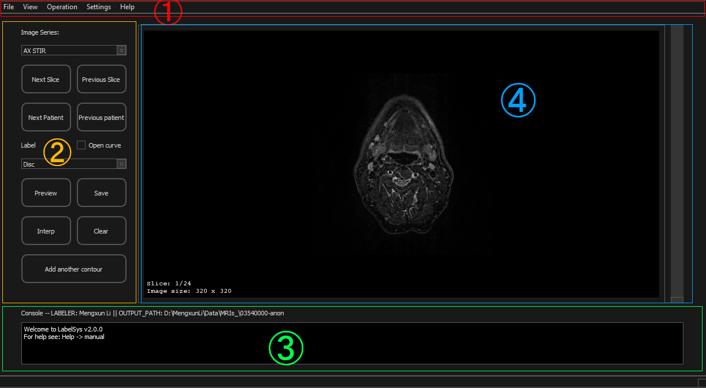

Manual
Table of content
Interface

- Menu Bar
- Operation Panel: Main labeling operations can be accessed here
- Labeling Panel: Showing image and allow labeling
- Console Output: Where program output shows
Example - MRILabeling of articular disc
Openning DICOM files
This manual will be finished later
Author(s):Mengxun Li
Email:
mengxunli@whu.edu.cn | mengxun1@ualberta.ca
Credit(s):
Dr. Kumaradevan Punithakumar
Dr. Abhilash Hareendranathan